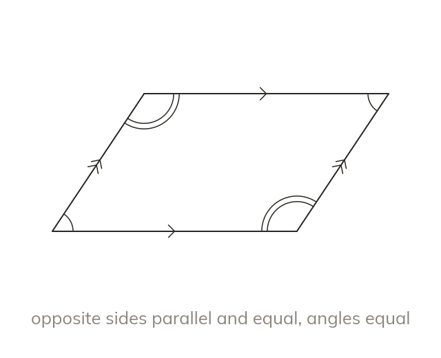

Parallelograms and rhombuses
A parallelogram has two pairs of parallel sides. Its opposite sides and opposite angles are equal. A rhombus is a parallelogram with four equal sides.
A parallelogram has two pairs of parallel sides, with opposite sides equal and opposite angles equal. A rhombus is a parallelogram whose four sides are all equal.